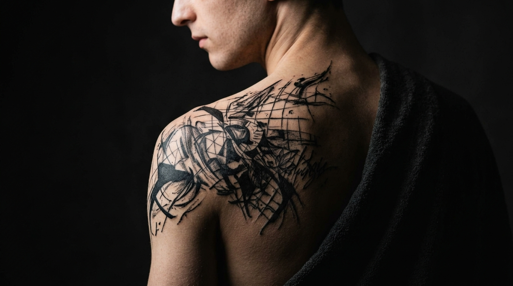
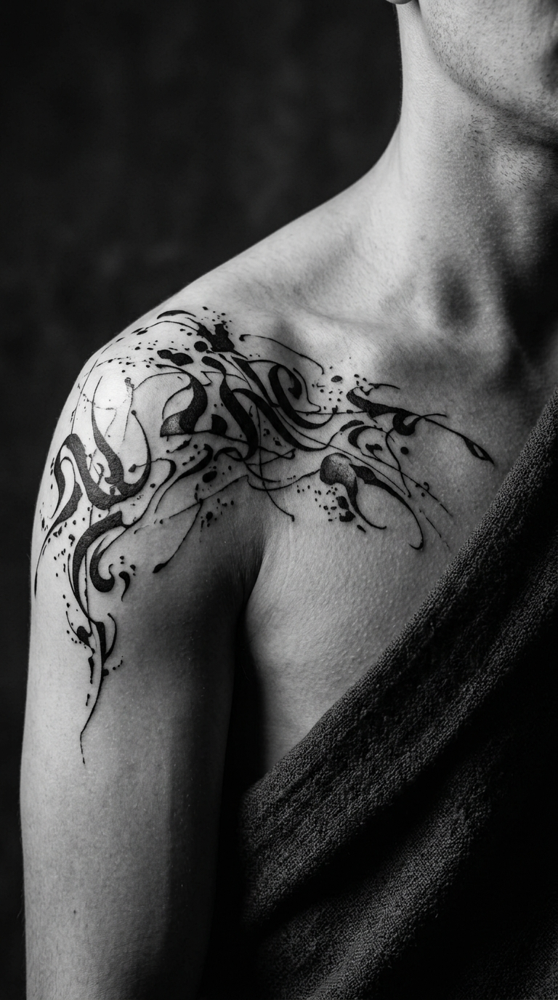
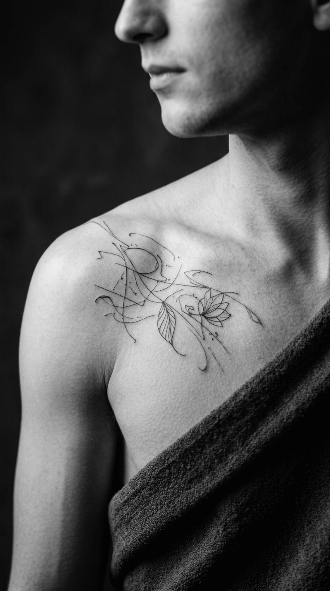
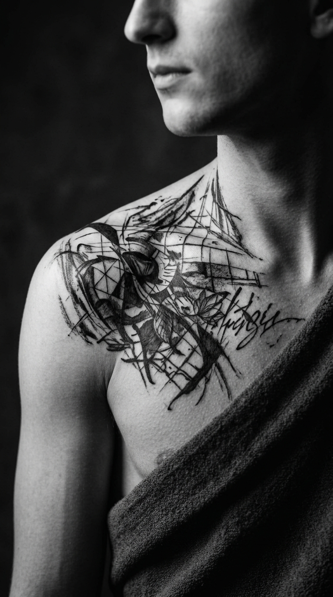

01
Blackwork
Contraste / composição
Tatuagem autoral
Desenhos desenvolvidos para o corpo, não para seguir uma tendência. Do primeiro rascunho à sessão.
Falar
A ideia vem antes da tinta.
O NOIR trabalha com projetos personalizados, construídos a partir de conversa, referências e proporção. Cada desenho é pensado para acompanhar o movimento do corpo.
Blackwork, traço fino, composição gráfica e peças autorais. O processo é direto: entender, desenhar, ajustar e tatuar.
Portfólio
Contraste / composição

Forma / movimento

Detalhe / precisão

Textura / gesto
O que pode virar desenho
Áreas de preto, contraste e formas marcantes.
Traços leves, detalhes e desenhos de escala menor.
Uma composição criada a partir da sua ideia e referência.
Peças maiores e trabalhos construídos em etapas.
Sem complicar.
Você envia sua ideia, referências, local do corpo e tamanho aproximado.
A proposta ganha forma e é ajustada até fazer sentido para você.
Com tudo definido, combinamos o horário e partimos para a pele.
Tem um projeto?
Envie sua ideia pelo WhatsApp. Quanto mais detalhes você tiver, melhor conseguimos começar a conversa.
Iniciar conversa↗